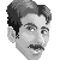
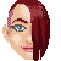
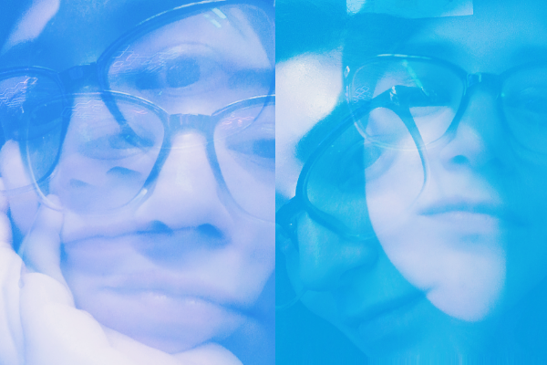

BIO
Soy una ilustradora y artista multimedia que reside en Buenos Aires, Argentina. Estoy estudiando la carrera de Arte Multimedia en la UNA (Universidad Nacional de las Artes), y previamente me recibí como Maestra Nacional de Bellas Artes en el Instituto Superior de Formación Artística Rogelio Yrurtia, en el barrio de Mataderos. Estudié dibujo estilo Manga por dos años, dentro de la clase del profesor Walther Taborda en la escuela La Ola, y realizé un curso de diseño de fondos y dirección artística con Nelson Luty, en la escuela Animaclick.
Las personas que más me inspiran son: Beck, Elsa Bornemann, Nikola Tesla, Shirley Manson y David Bowie.
Beck
Elsa Borneman

Nikola Tesla

Shirley Manson

David Bowie

"Si querés encontrar los secretos del universo, pensá en términos de energía, frecuencia y vibración."
- Nikola Tesla, Inventor.
Creo fervientemente que el código también puede ser arte, y por eso me he embarcado en esta carrera multimedia, para crear instalaciones interactivas, y nuevas experiencias audiovisuales y virtuales. Me fascina toda la interacción e inmersión que puede traer consigo la cruza de géneros (en el sentido semiótico) con la cual se pueden contar historias sólidas y atrapantes pero novedosas, en distintos medios, como ser la historieta, que tiene un tipo de narrativa secuencial y puede ser también entremezclada con lo audiovisual y la realidad virtual o aumentada.
Apunto a generar una conexión emocional con el público a través de una estética sólida que apoye historias bien construídas en mis trabajos de ilustración, y una mirada particular, siempre dejando espacio para la exploración artística.

Foto de Giselle Llamas.